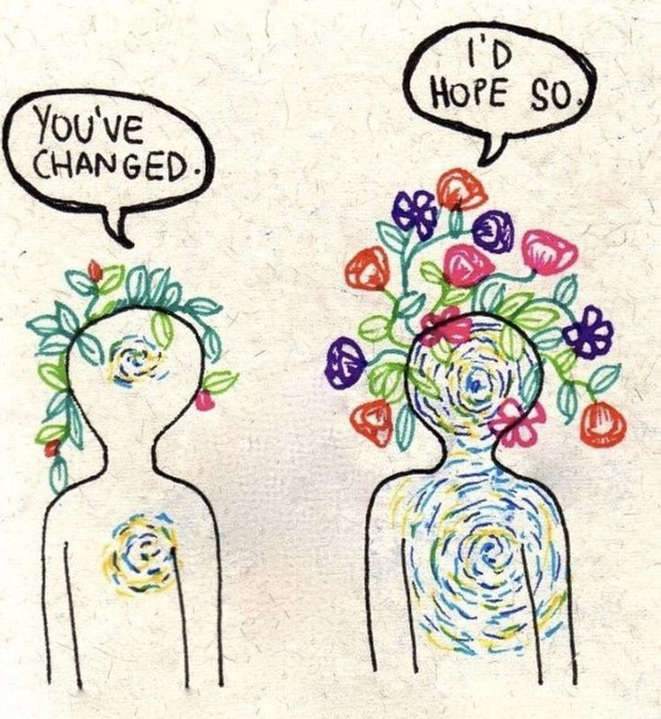
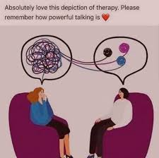

Starting this program and only having experience with counselling with adolescents in the school system, I led my therapeutic approach mainly by Motivational Interviewing (MI) , Positive Psychotherapy, Cognitive Behavioural Therapy (CBT) and Solution Focused Therapy (SFT), as these approaches have certain benefits in the school system, such as being able to provide homework, time efficient, more surface level, affordable, short-term, focuses on strengths and positive attributes and slightly faster to move through. One of the most popular interventions in the educational system is SFT because problems do not need to be discussed in full detail to find the solution, saving time as school counsellors might only be able to meet a student for 20 minutes if their schedules are full. One of the most useful techniques in SFT are the scaling questions. Scaling is used to quantify feelings, clarify next steps, and see progress in the client. I think scaling is beneficial because you can ask students if they have always had this problem and where was it on the scale before and what did you do to make the situation better. This strength-based approach allows students to tap into their own resources to solve problems. Last summer my partner and I gave a presentation on SFT and acted out the process of SFT using the miracle question, scaling, and exception questions.
Below is a link to our SFT PowerPoint from EDPS 638
Solution Focused TherapyMy evolving therapeutic lens
Looking back through discussion posts I have enjoyed looking through and seeing how my worldview and therapeutic approached as changed. I felt pressure at the beginning of the problem to pick a worldview I would adapt to, so I always stuck with Empiricism. However, I always believed that the therapeutic alliance was one of the most important aspects of therapy that leads to client change. As time progressed through the program and throughout practicum, I developed an integrative approach. I believe that therapists need a variety of tools in their toolbelt. For example, working as a school counsellor, you definitely need to have a working alliance with the student or else they will never come back to see you. The school that I am working at this year, the counsellor here comes from a more collectivism approach, as we work at a low SES school, and the counsellor is well aware of systemic issues that students and families are facing. During my practicum placement, my supervisor led from rationalism as she was trained through a psychoanalytic lens through Transactional Analysis (TA). Through supervision and consultation during practicum, I learned more about TA and started to employ this approach as one of my main interventions with clients. I found that CBT was too surface level and the clients I saw needed a deeper, more in-depth approach to counselling, specifically discussing childhood and parental issues. One of the use useful tools in TA is script analysis. This is used to gain an insight into the client’s beliefs they have about themselves and the world. Clients life script is developed in childhood and reinforced by parents and significant others around us that led to thoughts and actions in how we live our lives and the way we think of ourselves.
Evolution of Worldviews in Discussion Board Posts
EDPS 638, Counselling Inventions for Client Change
“Throughout this program I have mainly resonated with CBT as I work with adolescents suffering from anxiety and depression and I believe that CBT treatments such as correcting and identifying faulty cognitions and correcting thinking errors has worked with my students. CBT is one of the most studied psychological treatments for anxiety disorders in adolescents (Arendt, Thastum, & Hougaard, 2015). Furthermore, it has generated more empirical research and treatments for anxiety than any other psychotherapy model (Corey, 2011). However, working with a new teaching staff this year in a mental health program that uses mainly positive psychotherapy, solution based therapies, and mindfulness I have become confused about my theoretical orientation. I believe a collaborative person-centered is the best approach, regardless of theoretical orientation and implanting Rogers’s core conditions of change, empathic understanding, unconditional positive regard, and congruence are necessary (Raskin, Rogers, & Witty, 2014).
Currently, at work we offer mediation and mindfulness activities everyday for 30 minutes after lunch. Also I work alongside our social worker in his counseling sections where he implements a solution based therapeutic approach. He uses techniques such as the staircase approach, scaling, and the miracle question to encourage students to find and apply strategies to lessen their anxiety.
What draws me to eclecticism is the ability to remain flexible in my approach to help clients and have a toolbox of strategies and techniques in order to be able to help. A limitation in this approach is that it does not provide a framework of practice and I am more likely to lose my way in therapy, especially as a new practitioner (Truscott, 2010).”
References:
Arendt., K., Thastum, M., & Hougaard, E. (2016). Homework adherence and cognitive behaviour treatment outcome for children and adolescents with anxiety disorders. Behavioural and Cognitive Psychotherapy, 44, 225-235. DOI: 10.1017/S1352465815000429
Corey, G. (2011). Theory and Practice of Counselling & Psychotherapy. Toronto, ON: Nelson Education, Ltd.
Raskin, N.J., Rogers, C.R., & Witty, M.C. (2014). Client-Centered Therapy. In Wedding, D & Corsini, R.J. (Eds.), Current Psychotherapies (10 th ed.) p. 95-150. Belmont, CA: Brooks Cole, Cengage Learning.
Truscott, D. (2010). Becoming an effective psychotherapist: Adapting your Approach. Washington, DC: American Psychological Association.
EDPS 670, Final Project Portfolio
“My approach to counseling is a client-centered, holistic, integrative approach it allows therapists to select the most meaningful and appropriate approach that can address the particular problem the client is presenting (Truscott, 2010). I believe a balance of approaches, such as Transactional Analysis, narrative, EFT and ACT all have a place in therapy. Not one client will present with the same issue and have the same background so a variety of tools in my tool belt will assist the therapeutic process. In addition, Learning Rogers (1957) core conditions of therapeutic change always stuck with me. Congruence, unconditional positive regard, and empathic understanding have been three things that I bring into a counseling session with a client.”
My reflective statement has changed since week 2 but has been constantly reinforced throughout this last semester of practicum and perhaps has led to be tilt towards psychodynamic theories. I believe that when clients participate in self-reflection and develop insight into their own lives and experiences, they are able to achieve greater self-understanding leading to change. I think that counsellors benefit from being well versed in different areas of interventions as no one client is the same. Finally, first and foremost, I believe the working alliance is one of the key factors that leads to successful client outcomes.
Rogers, C.R (1957) The necessary and sufficient conditions of therapeutic personality change. Journal of Consulting Psychology, 21,95-103.
Supervision and Practicum Site
My supervisor is guided by working through a type psychoanalytic theory – Transactional Analysis and person-centered therapy. My supervisor believes that as our understandings of ourselves change we are better able to make decisions and come up with solutions to our problems. The past influences our present day and the patterns of all subjective thoughts, feelings, and emotional processes influence our decisions. My supervisor runs Insight Counselling and Therapy Centre. The mission is to provide counselling services to all, regardless of income and to promote positive change. The second location I worked through was The Southwest Community Resource Centre. Here they help to provide clients with resources they need, build skills, and increase personal resilience by promoting positive change and provide services that strengthen the community.
Below is the website link to Insight Counselling and Therapy Centre:
Below is the website link to The Southwest Community Resource Centre
My counselling journey has been strengthened by belief that through engaging in counselling, we can change, grow, and learn to connect with ourselves and others and through the process of digging deep into our most inner thoughts and beliefs that guide us through our lives. These two photos shown below are two powerful pictures depicting my view of counselling.
